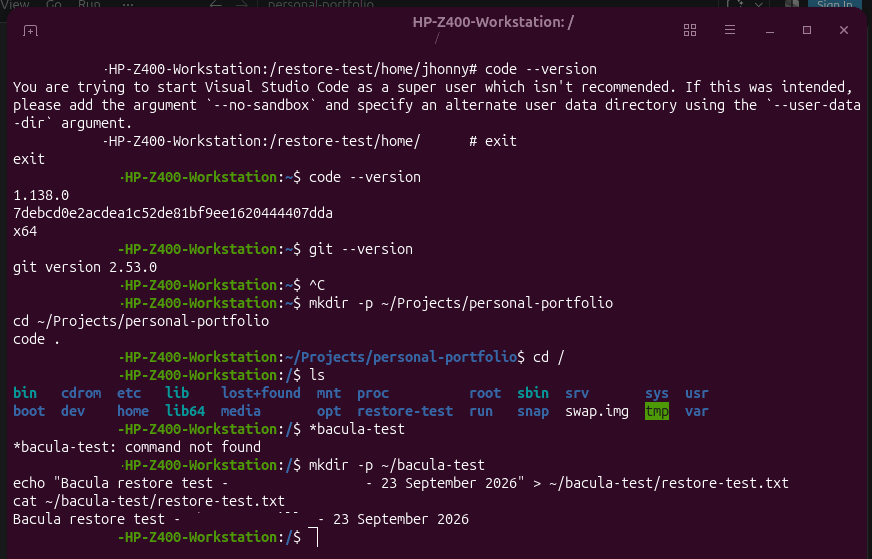
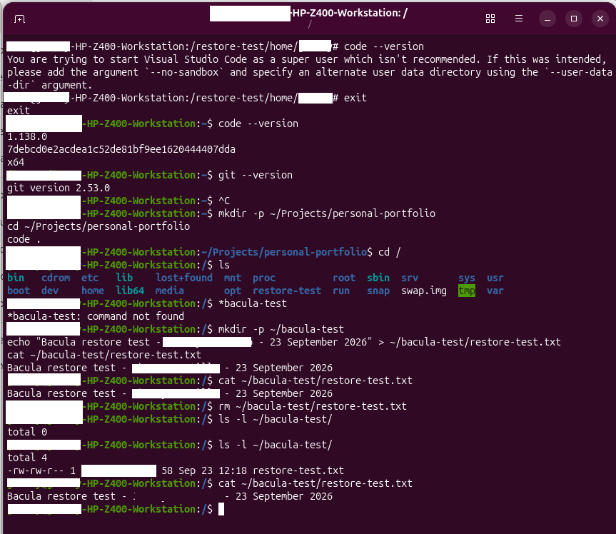

← Back to Projects
Project Overview
This project demonstrates the deployment and administration of a
centralised backup and recovery infrastructure using Bacula across
virtualised, physical and network-attached storage environments.
A dedicated Debian 13 virtual machine operates as the central
Bacula server, providing backup orchestration, storage management
and catalogue services. A physical HP Z400 Linux workstation is
configured as a remote Bacula client and protected across the
local network.
The lab covers scheduled Full, Differential and Incremental
backups, PostgreSQL catalogue protection, remote client
communication and file-level disaster recovery.
Lab Architecture
The environment combines a physical Linux backup client, a virtualised
Bacula server and network-attached storage. Backup and recovery jobs are
centrally managed by the Bacula Director on the Debian server, while
backup volumes are written to a Synology NAS through an NFS share mounted
at /backup on the Bacula server.
HP Z400 WORKSTATION
Physical Linux Client
Bacula File Daemon
Remote Backup Client
File-Level Recovery Target
BACULA-SERVER
Debian 13 Virtual Machine
VirtualBox
Bacula Director
Storage Daemon
PostgreSQL Catalogue
Bconsole
SYNOLOGY NAS
Network Backup Storage
NFS Share
/volume1/BaculaBackups
Mounted at /backup
Bacula Backup Volumes
Implementation
The Bacula environment was deployed as a centralised backup solution
combining a virtualised server, a physical Linux client and
network-attached storage.
Bacula Server Deployment
A Debian 13 virtual machine was deployed in VirtualBox as the central
backup server. Bacula Director, Storage Daemon, PostgreSQL catalogue
and Bconsole were installed and configured to manage backup jobs,
storage resources and recovery operations.
Physical Client Integration
The HP Z400 Linux workstation was integrated as a remote backup client
using the Bacula File Daemon. Communication between the client and
Bacula Director was configured across the local network, allowing the
server to centrally manage backup and recovery operations.
Network Storage Integration
A dedicated Synology NAS share at /volume1/BaculaBackups
was configured for network backup storage and mounted on the Bacula
server at /backup using NFS. Bacula was then configured
to use this mounted storage location for its backup volumes.
Backup Configuration
The HP Z400 workstation is protected by a dedicated Bacula backup
job named Backup-Z400. The job defines the client,
FileSet, backup schedule and storage resources, with backup volumes
written to the Synology NAS through the NFS storage mounted on the
Bacula server.
Client and FileSet Configuration
The physical HP Z400 workstation communicates with the Bacula
Director through the Bacula File Daemon. The
Z400-Home FileSet protects the
/home/jhonny directory.
VirtualBox virtual machine directories are excluded from the
FileSet to prevent large VM disk images from being included
unnecessarily in the workstation backup.

Backup Schedule
The backup policy uses a monthly Full backup on the first Sunday,
Differential backups on the remaining Sundays, and Incremental
backups from Monday to Saturday. All scheduled backup jobs run
at 23:05.
This strategy provides a complete baseline while reducing the
amount of data processed during subsequent backup operations.
Backup volumes are written to the Synology NAS through the NFS
storage mounted at /backup on the Bacula server.
The Bacula Director automatically schedules and coordinates
these jobs using the configured storage pool and catalogue.

Bacula Director status confirming scheduled backup jobs and successfully
completed backup operations.
Backup & Recovery Validation
To validate the backup infrastructure, I performed an end-to-end
backup and recovery test using the physical HP Z400 Linux workstation
as a remote Bacula client.
The test simulated a real data-loss scenario: a test file was created,
captured by an incremental backup, deliberately deleted from the client
and subsequently recovered using the Bacula catalogue and storage volume.
The restored file was then verified directly on the workstation.
1. Test File & Backup
A dedicated test file was created on the HP Z400 workstation
specifically for the recovery test. Its contents were verified
before running the backup.
An incremental backup was then executed. Bacula completed
JobId 15 successfully, capturing the new test file as part of
the changed data on the client.

2. Simulated Data Loss
After confirming that the test file had been protected by the
backup, it was deliberately deleted from the HP Z400 workstation
to simulate accidental data loss.
Listing the directory afterwards confirmed that the file was no
longer present on the local filesystem.

3. Catalogue-Based File Recovery
The Bacula restore interface in Bconsole was used to locate the
deleted file from the backup catalogue. The required backup JobId
was selected and the individual file was marked for restoration.
The HP Z400 File Daemon was selected as the restore client and
the file was restored to a dedicated recovery location for
verification before being returned to its normal location.

4. Restore Job Validation
Bacula successfully completed Restore JobId 16. The Director
reported one restored file, 58 bytes transferred and an
OK termination status.

5. Recovery Verification
The recovered file was verified directly on the HP Z400
workstation using Linux command-line tools. The restored file
was confirmed in the dedicated recovery location with the
expected size and contents.

Result
The recovery test successfully demonstrated the complete
backup lifecycle: data protection, simulated data loss,
catalogue-based recovery, restoration and post-recovery
verification.
This confirmed that the Bacula infrastructure was capable not
only of completing scheduled backups, but also of recovering
individual files successfully when required.
Challenges & Troubleshooting
During the deployment and validation of the Bacula environment,
several configuration and operational checks were required to
distinguish backup infrastructure issues from secondary service
warnings.
Bacula Service Validation
The Bacula Director service was inspected using
systemctl to verify that the daemon was running
correctly after configuration changes.
The service remained active (running), confirming
that the Bacula Director itself was operational.

Notification Delivery Error
System logs reported message delivery errors involving
bsmtp. Investigation showed that these warnings were
associated with Bacula's email notification mechanism rather than
backup or restore job execution.
The issue was isolated by comparing the systemd service status
with the results reported by Bconsole. Backup and restore jobs
continued to complete successfully with an
OK termination status.
Validation Approach
Configuration and runtime behaviour were verified using
systemctl, journalctl,
bconsole, Bacula configuration validation and
Linux command-line tools.
This troubleshooting process helped separate infrastructure
health, backup job execution and notification delivery into
independently verifiable components.
Skills Demonstrated
This project provided hands-on experience in deploying,
configuring and validating a centralised backup and recovery
infrastructure.
Linux Administration
- Debian 13
- Ubuntu
- systemd
- CLI
- Service Management
Backup & Recovery
- Bacula
- Full Backup
- Differential Backup
- Incremental Backup
- File-Level Restore
Infrastructure
- VirtualBox
- Synology NAS
- NFS
- Physical & Virtual Infrastructure
- Client/Server Architecture
Database & Catalogue
- PostgreSQL
- Bacula Catalogue
- Backup Catalogue Management
Troubleshooting
- systemctl
- journalctl
- Service Validation
- Log Analysis
Disaster Recovery
- Data-Loss Simulation
- Catalogue Recovery
- Recovery Verification
Technical Documentation
Read the complete Bacula Backup Server laboratory
documentation, including installation, backup
configuration, NAS integration, troubleshooting
and recovery validation.